A culinary journey through the flavors of the ancient capital
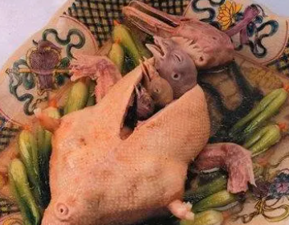
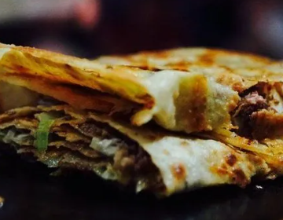
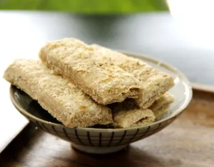
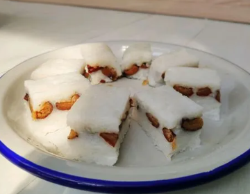
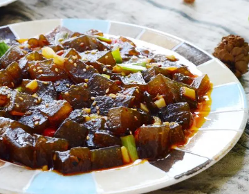
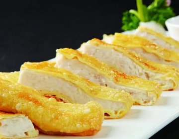
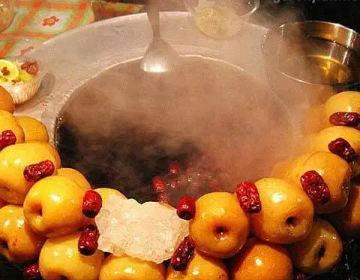
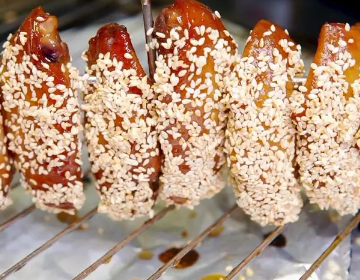
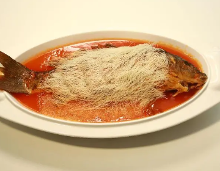
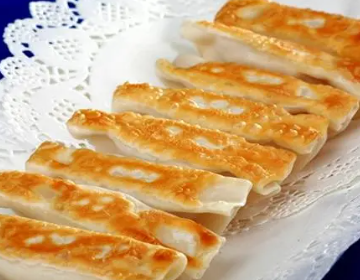
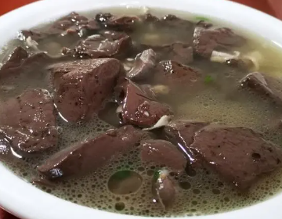
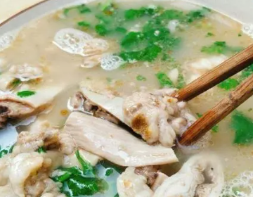
Kaifeng's cuisine reflects its imperial heritage as the capital of the Northern Song Dynasty. The imperial kitchens once employed thousands of chefs creating elaborate banquets that influenced Chinese culinary traditions for centuries. Among the most famous dishes is the Carp Baked with Noodles (Liyu Beimian), a royal delicacy where crispy fried noodles crown a tender braised carp, symbolizing the prosperity of the Yellow River. The Four Treasures Set (Tao Si Bao) is another masterpiece, featuring four types of poultry nested within one another, representing the pinnacle of Kaifeng's culinary artistry.
Northern Song Imperial CuisineThe Kaifeng Night Market is one of the oldest and most famous night market traditions in China, originating in the Northern Song Dynasty when Kaifeng became the first Chinese city to lift its nighttime curfew. Today, the night markets come alive after sunset with hundreds of vendors selling traditional snacks that have been perfected over generations. The famous Baozi (steamed buns) of Kaifeng, once praised by the Song Dynasty court, remain a must-try delicacy.
Thousand-Year Night Market Tradition